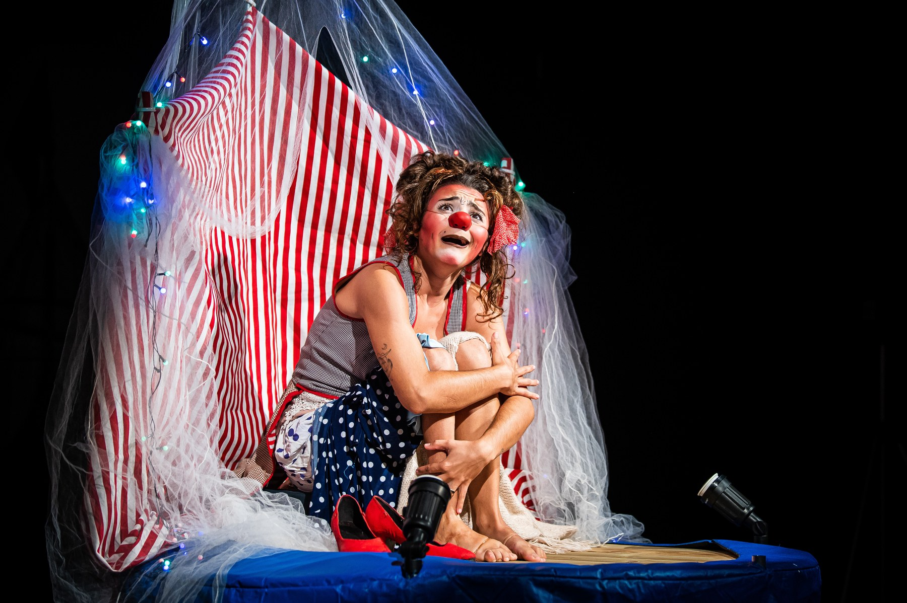

Foto — Toia Oliveira
Guia
10 festivais de teatro do Brasil e quando acontecem (2026)
O Festival de Teatro do Rio abriu a segunda edição em 29 de julho, no Teatro Riachuelo, e fica em cartaz até 16 de agosto. Em setembro, a mesma produtora estrei…